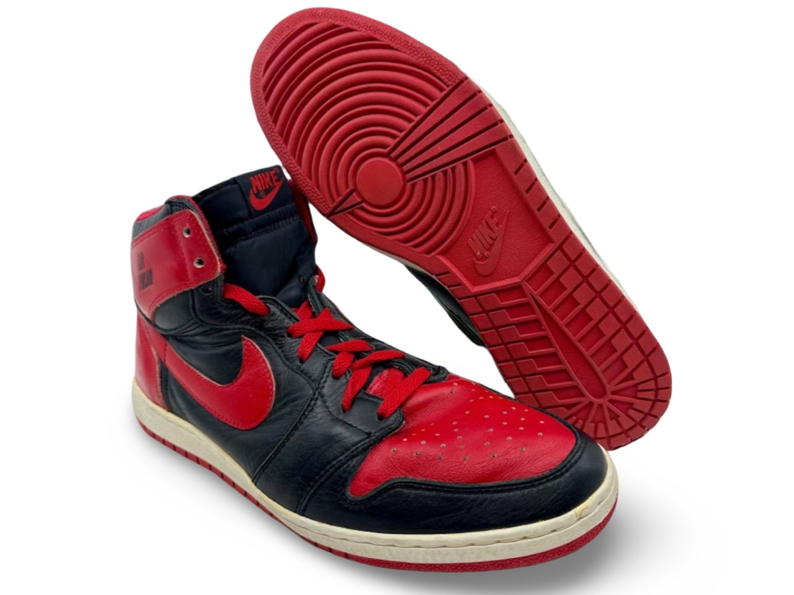

Air Jordan I
Verification Summary
| Method | Count | Public | Private | Status |
|---|---|---|---|---|
| Photo Matched | 1 | 1 | 0 | ⏳ |
| Coding Verified | 0 | 0 | 0 | ⏳ |
Unlike jerseys, footwear is documented by model, use, and method of verification rather than population accounting.
MODEL OVERVIEW

Documented Air Jordan examples associated with Michael Jordan’s first ever Air Jordan sneakers professionally worn.
Early examples reflect initial professional use and provide context for the evolution of Jordan’s footwear with a a double wing and basketball logo - designed by Peter Moore.
Methodology & Identification
Footwear identification within the archive extends beyond direct visual comparison. Analysis incorporates model chronology, production coding, material behavior, and player-specific wear patterns observed across game imagery and surviving examples.
Particular attention is given to structural deformation during use, including creasing patterns, lace tension habits, and outsole or mid-sole stress responses resulting from Jordan’s movement and play style.
Final identification is determined through the convergence of these characteristics rather than any single matching detail.
1984 AIR JORDAN I - PROTOTYPE


The first ever Air Jordan made as a prototype and photo-matched to multiple promotional campaigns.
Public Sale
Owned By
Photo Match Details
Match info: "themichaeljordanarchive" →
Research & Provenance
- First known pair ever produced as a prototype for testing and visual aids.
- A sample version of the Air Jordan featuring "AIR JORDAN" branding prior to the official logo and launch of the first line designed for Michael Jordan.
- Internally photo-matched within the archive to multiple promotional photographs.